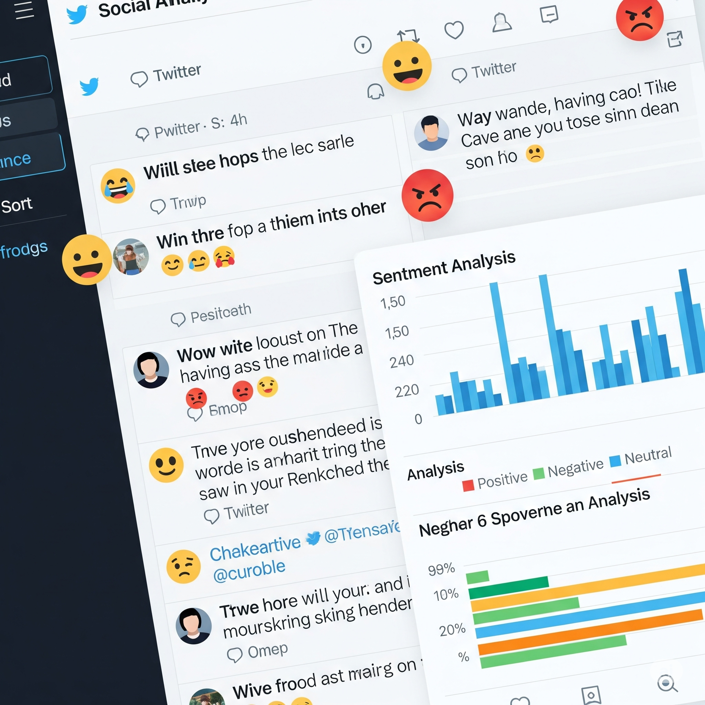

My Projects



Passionate about building AI-driven systems that solve complex problems and deliver impactful solutions.
I'm a dedicated AI & ML Software Developer with expertise in building intelligent systems using frameworks like Hugging Face and Open AI. Currently working as a Research Associate Software Developer at Athenova, where I focus on developing advanced AI-driven applications.
With a strong academic background and hands-on experience in machine learning and natural language processing, I aim to create impactful AI solutions that drive innovation.
Vellore Institute of Technology, Vellore
Aug 2022 – May 2024
Vels Institute of Science and Technology, Chennai
Aug 2019 – May 2022
Athenova • Remote
Mar 2025 – Present
VIT, Vellore
June 2022 – May 2024
Teachnook • Remote
Oct 2024 – Dec 2024
Vels Institute of Science and Technology, Chennai
Aug 2019 – May 2022
